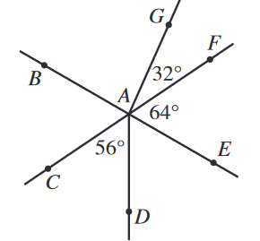

In the figure below, \(\overleftrightarrow{BE}\) and \(\overleftrightarrow{CF}\) intersect at point \(A\). Points \(G\) and \(D\) are in the interiors of angles
\(\angle{BAF}\) and \(\angle{CAE}\), respectively. Some angle measures are given. What is the measure of \(\angle{BAG}\) ?

\(\angle{CAD}\), \(\angle{DAE}\), and \(\angle{EAF}\) should add up to \(180^\circ\) since they make up all the angles along the bottom portion of line \(\overleftrightarrow{CF}\).
$$ 56^\circ + m\angle{DAE} + 64^\circ = 180^\circ $$
$$ m\angle{DAE} = 60^\circ $$
\(\angle{BAC} \cong \angle{EAF}\) since they are vertical angles (opposite of each other where lines cross).
We can then sum up all of the angles to \(360^\circ\). Starting at \(\angle{BAG}\) and going clockwise:
$$ m\angle{BAG} + 32^\circ + 64^\circ + 60^\circ + 56^\circ + 64^\circ = 360^\circ $$
$$ m\angle{BAG} = \boxed{84^\circ} $$